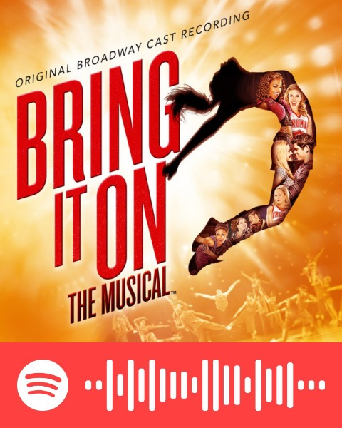

Mis Selecciones
Aquí están algunas canciones las que son mis favroitas en este momento.
| Canción/Álbum | Artista(s)/Compositor(es) & Arreglista(s) | Enlace a canción/álbum | Enlace al video musical/subtítulos |
|---|---|---|---|
| Determinate (Tradución Española: Determinado) | Escrito por Niclas Molinder, Joacim Persson, Johan Alkenäs, Charlie Mason, Ebony Burks y Adam Hicks; Realizado por Bridgit Mendler y Adam Hicks | ||
| Breakthrough (Tradución Española: Avance) | Escrito por Bryan Todd, Maria Christensen, Shridhar Solanki y Adam Hicks; Realizado por Bridgit Mendler, Adam Hicks, Hayley Kiyoko, Naomi Scott y Blake Michael | ||
| Teppen E Dash (Tradución española: Corre hacia la cima) | Artista: pugcat's | ||
| Bonse Aba | Adaptado por Victor C. Johnson | SATB (Soprano Alto Tenor Bajo): Tres-parte Mezclado (SAB; Soprano, Alto, Barítono): |
Puedes buscar presentaciones de esta canción en YouTube |
| Hariet Tubman SSAA (Soprano 1, Soprano 2, Alto 1, Alto 2) | Letra y Música por Walter Robinson, Adaptado por Kathleen McGuire | Puedes buscar presentaciones de esta canción en YouTube | |
| Old Joe Clark (Joe Clark Viejo) | Adaptado por Greg Gilpin (primera versión); Adaptado por Dan Davison (segunda versión) | adaptado por Greg Gilpin: adaptado por Dan Davison: |
Puedes buscar presentaciones de esta canción en YouTube |
| Say Hey (Tradución española: Dí Oye) | Escrito por Charity Daw, Josh Edmondson y Sam Hollander; Realizado por Dove Cameron |  |
video de subtítulos españoles: |
| Froyo Yolo | Escrito por Eric Peter Goldman y Ron Hart; Realizado por Dove Cameron | ||
| Mean Girls Original Broadway Cast Recording (OBCR) (Tradución española: Chicas Antipáticas Grabación del Reparto Original de Broadway) | Música por Jeff Richmond, Letra por Nell Benjamin |  |
Puedes ver presentaciones en YouTube |
| Six the Musical Studio Cast Recording (Tradución Española: La Musical Seis Grabación Original del Estudio) | Música y Letra por Toby Marlow y Lucy Moss |  |
Puedes ver presentaciones en YouTube |
| Megasix | Música y Letra por Toby Marlow y Lucy Moss | Puedes ver otras presentaciones de esta canción en YouTube | |
| Sherry | Escrito por Bob Gaudio; esta versión de la canción estuvo grabada por el Jersey Boys (Chicos de Jersey) Reparto Original de Broadway |  |
Puedes ver presentaciones en YouTube |
| Big Girls Don't Cry (Tradución Española: Chicas Maduras no Lloran) | Escrito por Bob Crewe and Bob Gaudio; esta versión de la canción estuvo grabada por el Jersey Boys (Chicos de Jersey) Reparto Original de Broadway | Puedes ver presentaciones en YouTube | |
| Walk Like a Man (Tradución Española: Camine Como un Hombre) | Escrito por Bob Crewe and Bob Gaudio; esta versión de la canción estuvo grabada por el Jersey Boys (Chicos de Jersey) Reparto Original de Broadway |  |
Puedes ver presentaciones en YouTube |
| All I Want for Christmas is You (Todo que Quiero para Navidad es Ti) | Escrito por Mariah Carey y Walter Afanasieff; Realizado por Mariah Carey |  |
video musical de 2009: Video musical de 2019: |
| Shocking Impression☆Here's Harry! (Tradución Española: ¡Impresión Inesperada☆Aquí Está Harry!) | Escrito y Compuesto por Fujimoto Noriko; Cantado por Nida Junko y Fukushima Jun |  |
Subtítulos ingleses: |
| Super Bass | Escrito por Nicki Minaj, Ester Dean, Roahn Hylton y Kane Beatz |  |
|
| Hairspray OBCR (Grabación del Reparto Original de Broadway) | Música y Letra por Marc Shaiman, Letra por Scott Wittman |  |
Puedes buscar presentaciones en YouTube |
| Never Shut Up Again (Nunca Callaré Otra Vez) | Música y Letra por Kevin Murphy y Laurence O'Keefe |  |
|
| Bring it On the Musical OBCR (La Musical Triunfos Robados Grabación del Reparto Orignal de Broadway) | Música por Tom Kitt (Truman) y Lin-Manuel Miranda (Jackson), Letra por Lin-Manuel Miranda y Amanda Green |  | Puedes buscar presentaciones en YouTube |
| DIY Queen (La Reina de Hágalo Usted Mismo) | Artista: Lauren Riihimaki (se llama LaurDIY en YouTube) |  |
|
| Be More Chill OBCR (Be More Chill Grabación del Reparto Original de Broadway) | Música y Letra por Joe Iconis |  |
Puedes buscar presentaciones en YouTube |
| In the Heights (En los Heights; "Heights" refiere al barrio Washington Heights en Manhattan, Nueva York) OBCR (Grabación del Reparto Original de Broadway) | Compuesta por Lin-Manuel Miranda | Puedes buscar presentaciones en YouTube | |
| Audrey's Christmas Rewind (Tradución Española: El Reobinado Navideño de Audrey) | Artistas: Sarah Jeffery y Jadah Marie | Video musical: Video de la letra: Video entre bambalinas: |